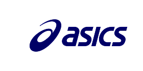
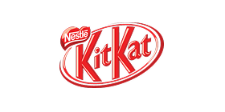
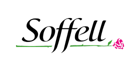
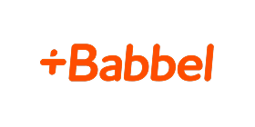

Case Study (Portfolio)


Savills 30th Anniversary - Market Review
Design is for solving problems, not "airy-fairy" creativity. For the Savills 30th Anniversary, my mission was simple: Make it work. This was about respecting the legacy, using visuals to write the next chapter of an existing story while honoring the values built before me.
With a global giant like Savills, there is no room for ego or "freestyling." Execution must be flawless and strictly compliant with brand standards.
Ultimately, success isn't about chasing a "WOW" from the crowd. It’s about deciphering the vision of the top decision-maker. I align with the person who signs the checks to deliver actual results.
- Audience
- C-Suite Executives, Major Corporations
- Focus
- KV Design, Motion Visuals, Sustainable Design, Digital Experience
- Role
- Art Director, Design Manager, Creative Concept
Savills 30 Years Event Concept
Redefining Fintech Visual Language.
Established a scalable design system for a leading AI Fintech, ensuring consistency across product interfaces, marketing assets, and corporate communications.
- Scope
- Brand Guidelines, Design System, UI Kit
- Impact
- Reduced design time by 40%, Unified brand voice
- Role
- Brand Strategy, Design Lead
Brand Identity Showcase
Optimizing Conversion through Data-Driven UX.
Revamped the core user journey for a high-traffic financial platform, utilizing heatmaps and A/B testing to significantly improve conversion rates and user retention.
- Tools
- Figma, Hotjar, Google Optimize
- Results
- +25% Conversion Rate, -15% Bounce Rate
- Role
- UX Research, UI Design
UX/UI Optimization
Bringing Stories to Life.
Creating dynamic motion systems that enhance user engagement and communicate complex ideas through fluid animation and visual storytelling.
- Focus
- 2D/3D Animation, Micro-interactions
- Tools
- After Effects, Cinema 4D, Lottie
- Role
- Motion Designer, Art Director
Motion Graphics Showcase
Brand Identity — Extended Exploration.
Building on the original identity foundation, this exploration expands applications across campaign touchpoints and motion, ensuring consistency while enabling expressive variations for high-impact moments.
- Scope
- Applied Identity, Campaign Toolkit, Motion System
- Impact
- Faster asset production (+30%), Consistent cross-channel presence
- Role
- Design Lead, System Architect
Brand Identity — Extended System
Professional Experience
Strategic contributions to leading global brands and high-growth startups across Fintech, AdTech, and Creative Production sectors.
 Creative Production
Creative Production
BRAND EXPERIENCE








